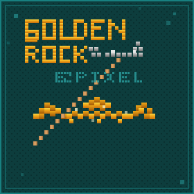

智能海钓路线规划引擎 · 科学出海，精准下竿
海钓路书是一款专为海钓爱好者打造的专业级路线规划工具。融合海洋气象预报、历史渔获数据、潮汐规律与鱼群迁徙算法，为每一次出海提供科学的路书方案——从何时出发、在哪里下竿、到用什么饵料，全程智能推荐。
结合目标鱼种、季节、洋流等多维数据，自动生成最优出海路线。
实时接入浪高、风速、水温等数据，智能评估出海适宜度。
基于历史渔获和鱼类生态模型，预测不同季节的鱼群热区。
输入目标即可生成完整路书——航线、钓点、装备、安全提示。